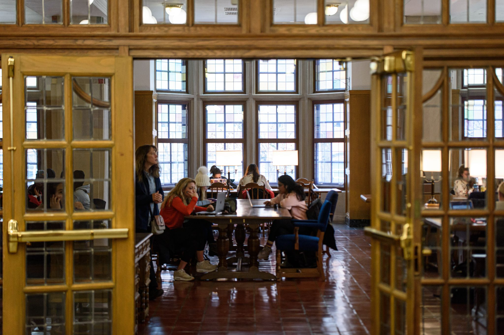
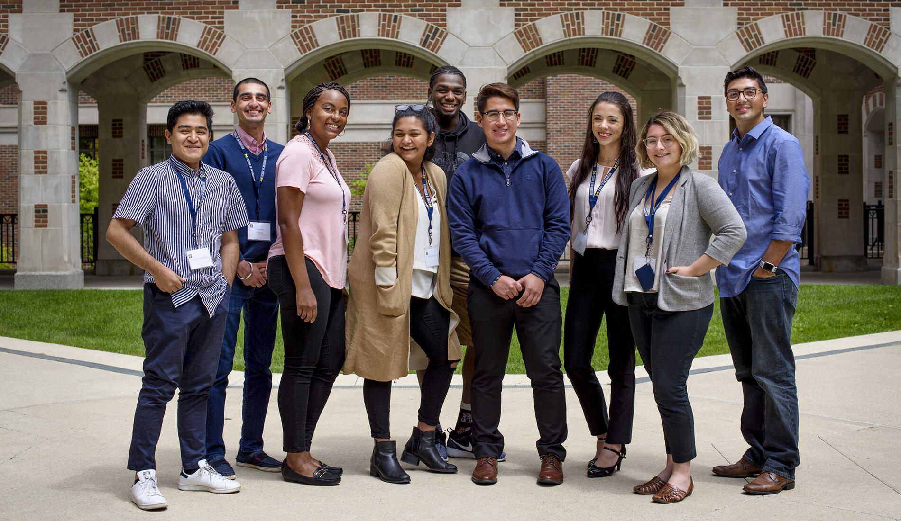

UMSI Programming Peer Tutoring Information Available for the below courses:
Please note, we have UMSI Programming Peer Tutors available for both SI and SIADS courses. Please review the course offerings and support available in the below sections to identify the UMSI Programming Peer Tutors that best support your needs.
- SI 106 Programs, Information, and People
- SI 206 Data-Oriented Programming
- SI 506 Programming I
- SI 507 Intermediate Programming
- General Python support
Book Appointments with our Programming Peer Tutors:
Akash Dewan
Hey! My name is Akash Dewan and I am a senior in the BSI program on the Information Analysis pathway with minors in Computer Science and Digital Studies. I have an extensive background working with Python and SQL and would love to help you out in any of the following classes: SI 106, SI 206/506, SI 305, and SI 330. I am looking to go into Data Analytics / Quantitative Research in the Media/Entertainment Industry so if that is something that aligns with you, please reach out! Outside of academics, I am an avid filmmaker, photographer, and music lover so feel free to hit me with any questions about balancing school with art / ways to get involved artistically on campus! Or if you just wanna yap about existential topics...~
Book an appointment with Akash
Prem Ganesan
Hey there! I'm diving into the world of health informatics as a first-year master's student, armed with a computer science master's degree. My playground includes data analysis, machine learning, and AI, all in the fascinating realm of healthcare. Python has been my coding buddy for a solid 3 years now. Beyond the books, I'm a soccer enthusiast, juggling the ball professionally. Let's make this tutoring journey a blast—connecting the tech dots with a sprinkle of fun!